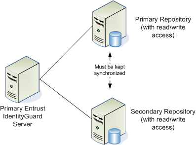
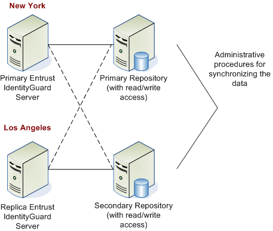
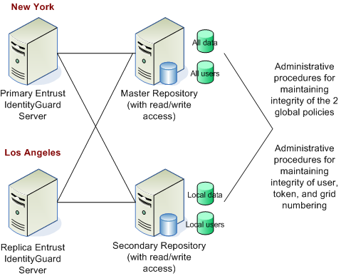

|
IdentityGuard Server 13.0 Administration Guide |
|
IdentityGuard Server 13.0 Administration Guide |
You can configure repository failover to ensure there are backups if the primary repository fails. To configure failover, use the Properties Editor to specify multiple repository URLs—either LDAP-compliant directories or databases—in the Entrust IdentityGuard properties file.
There are two repository failover scenarios:
● local
● geographically dispersed
In this scenario, the users are usually in one office or city. You can use two databases or two LDAP-compliant directories in this scenario, but using one of each is not recommended.
There is a primary repository and a secondary repository. The two repositories are kept synchronized. If the primary repository fails, traffic is redirected to the secondary repository.
The following illustration provides an example of a local repository failover scenario.

This scenario demonstrates how you can deploy failover for Entrust IdentityGuard users in two different cities (for example, Los Angeles and New York). The Entrust IdentityGuard server in each city is connected to its own repository. If the repository in Los Angeles fails, the Entrust IdentityGuard server in Los Angeles can connect to the New York repository.
Standard multi-site failover configuration
In the standard configuration, each Entrust IdentityGuard server works from its own repository, but the two repositories must be perfect replicas of each other.
Note that when you use geographically-dispersed Entrust IdentityGuard servers, both servers can perform authentication tasks, but the primary Entrust IdentityGuard server must provide the Administration services.
The following illustration provides an example of a standard geographically-dispersed failover scenario. The solid lines show the normal operating connections, and the dotted lines show possible failover connections.

Advanced multi-site failover configuration
You can also set up separate storage for user, unassigned token, and preproduced grid data, either in the same repository or in separate repositories.
One site must maintain the master repository containing all of the data for the full Entrust IdentityGuard system. The secondary repository maintains its own local data, which must be uploaded to the master repository at regular intervals.
In this more advanced configuration, the master repository contains all of the data and policy information, while the secondary repository contains only local data. This allows high availability without worrying about the same data being changed in both repositories. Organizational procedures ensure that the local data in each site is read-only from the other site, while maintaining all the data from the entire Entrust IdentityGuard system in the master repository.
The following illustration provides an example of an advanced multi-site failover scenario. In this example, users in Los Angeles would still have access to their applications and be able to authenticate using the New York server.
